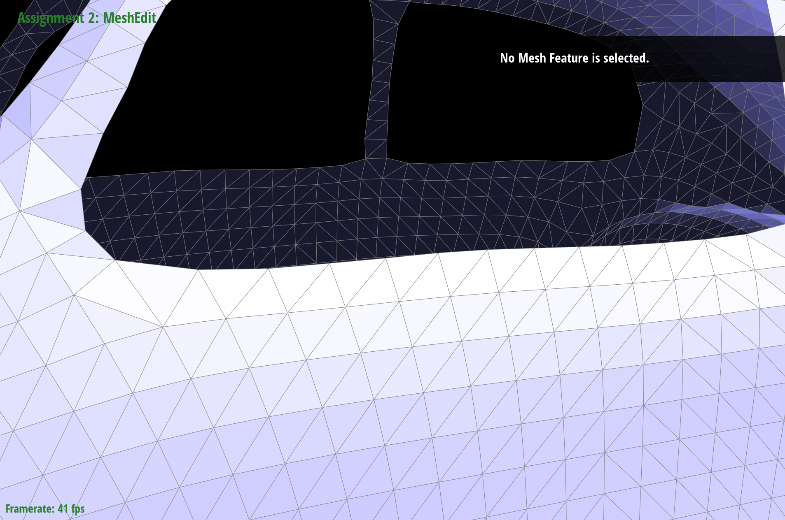

CS184/284A Spring 2025 Homework 2 Write-Up
Link to webpage: github.com/cal-cs184-student/hw-webpages-my-webpages
Link to GitHub repository: github.com/cal-cs184-student/sp25-hw2-superidol-hw2
Overview
I implemented several core geometric modeling and mesh processing algorithms:
- Bézier Curves & Patches
- Implemented de Casteljau's algorithm for both 2D curves and 3D surface patches.
- Used recursive linear interpolation to evaluate points on curves and surfaces.
- Mesh Vertex Normals
- Calculated vertex normals by taking area-weighted averages of adjacent face normals.
- Utilized the half-edge data structure.
- Mesh Operations
- flipEdge: Restructured mesh connectivity by flipping edges between triangles.
- splitEdge: Inserted new vertices at edge midpoints and updated connectivity.
- Loop Subdivision
- Computed new positions for existing vertices based on neighborhood.
- Placed new vertices on edges.
- Split edges and flipped appropriate connections.
- Updated vertex positions for a smoother result.
The most interesting aspects were working with the half-edge data structure, seeing how local topological operations affect global mesh properties, and understanding how simple subdivision rules can create smooth surfaces while preserving the original shape.
Section I: Bezier Curves and Surfaces
Part 1: Bezier curves with 1D de Casteljau subdivision
De Casteljau's algorithm is a recursive method used to evaluate Bezier curves. It works by linearly interpolating between points to generate new sets of points until only one point remains, which is the point on the Bezier curve corresponding to the given parameter ( t ).
Here's how the algorithm is implemented to evaluate Bezier curves:
- Base Case: If there are no points, return an empty vector. If there is only one point, return that point.
- Recursive Step: For each pair of consecutive points, compute a new point that is a linear interpolation between them using the parameter ( t ). This generates a new set of points.
- Repeat: Apply the same process to the new set of points until only one point remains.
Here is my Bezier curve, with each step and level of evaluation to the final evaluated point from left to right:

|
|
|
|
|
Part 2: Bezier surfaces with separable 1D de Casteljau
The de Casteljau algorithm extends to Bezier surfaces by applying the algorithm twice: once for each parameter (u and v). This involves evaluating the Bezier curve along one parameter (u) for each fixed value of the other parameter (v), and then evaluating the resulting points along the other parameter (v).
Here's how it is implemented:
- Evaluate Step for 3D Points: The evaluateStep function computes intermediate points for a given set of control points and a parameter t.
- Evaluate 1D: The evaluate1D function repeatedly applies evaluateStep to reduce a set of control points to a single point for a given parameter t.
- Evaluate Bezier Curve: The evaluate function first evaluates the Bezier curve along the u parameter for each row of control points, then evaluates the resulting points along the v parameter to get the final point on the Bezier surface.
|
|
Section II: Triangle Meshes and Half-Edge Data Structure
Part 3: Area-weighted vertex normals
The area-weighted vertex normal is computed by iterating through all the faces that share the vertex using the half-edge structure. For each face, we calculate the triangle's normal using the cross product of its edges, which inherently accounts for the triangle's area. The normals of all neighboring triangles are accumulated and then normalized to produce the final unit normal for the vertex.
|
|
|
Part 4: Edge flip
The edge flip operation flips a given edge in a mesh. How I implemented it was checking to see if the edge is a boundary. If it is, then I return the mesh as is. Otherwise, I get all the half edges that are connected to the edge, the vertices, edges, and faces of the half edges. Then, I update the half edges, vertices, edges, and faces. The last thing to do was to assign the new vertices, edges, and faces to the mesh.
|
|
|
|
|
Part 5: Edge split
The edge split operation is implemented by gathering the half-edges, vertices, edges, and faces involved with the edge being split. Then, I calculate the new vertex position by averaging the two existing vertices connected by the edge.
Next, I create new half-edges, edges, and faces to accommodate the new vertex. I carefully update the connections between these elements, ensuring that the mesh topology remains consistent after the split. Finally, I assign the new half-edges, vertices, edges, and faces back to the mesh.
|
|
|
|
|
|
|
|
Extra Credit: I have also implemented support for boundary edges. The implementation is the same for splitting the edge. However, instead of two edges for splitting, only one edge is used to split.
|
|
|

|
|
Part 6: Loop subdivision for mesh upsampling
The Loop subdivision is implemented in several steps to increase the number of triangles in the mesh using the Loop subdivision rule. Here is a brief explanation of the implementation:
- Compute New Vertex Positions: For each vertex in the original mesh, compute the new position using the Loop subdivision rule and store it in Vertex::newPosition. Mark each vertex as being part of the original mesh.
- Compute Edge Midpoint Positions: For each edge in the original mesh, compute the new position for the midpoint of the edge and store it in Edge::newPosition.
- Split Edges: Split every edge in the original mesh. For each split edge, set the new vertex position to the previously computed midpoint position and mark the new edges as new.
- Flip Edges: Flip any new edge that connects an old vertex and a new vertex to maintain the mesh's consistency.
- Update Vertex Positions: Copy the new vertex positions from Vertex::newPosition to Vertex::position.

|

|
After applying Loop Subdivision, the mesh undergoes significant smoothing, as seen in the transition between the two images. Initially, the model has a lower-resolution mesh with visible triangular faces and a more faceted appearance. After subdivision, the mesh becomes much denser, with a finer distribution of vertices, resulting in a smoother, more organic shape. However, this process also causes sharp corners and edges, such as those on the horns, ears, and snout, to become more rounded and less distinct. This effect occurs because Loop Subdivision refines the mesh by averaging vertex positions, which inherently reduces sharp features. One way to mitigate this smoothing effect is by pre-splitting edges or adding extra edge loops before subdivision. By placing edges closer together in areas that need to retain sharpness, the algorithm is less likely to smooth them out excessively, helping to preserve the original structure of the model.
Here's the loop subdivision of the cube:

|
Here's the loop subdivision of the cube with splitting edges, it becomes symmetric:
Loop subdivision on a cube without preprocessing often leads to asymmetrical refinement due to the cube's irregular vertex valences and sharp edges. This causes uneven edge splits, distorted faces, and irregular triangle sizes during subdivision.
To address this, preprocessing the cube with edge flips and splits is essential. Edge flipping rearranges the mesh connectivity to balance vertex valences, while edge splitting divides long or irregular edges into smaller, more uniform segments. These steps ensure a more uniform edge distribution and balanced vertex valences, which are critical for symmetrical refinement.
By preprocessing the cube, the mesh achieves a more uniform structure, allowing Loop subdivision to produce smoother, more symmetrical results. This reduces artifacts such as distorted faces and uneven triangle sizes, providing a better foundation for high-quality subdivision surfaces.